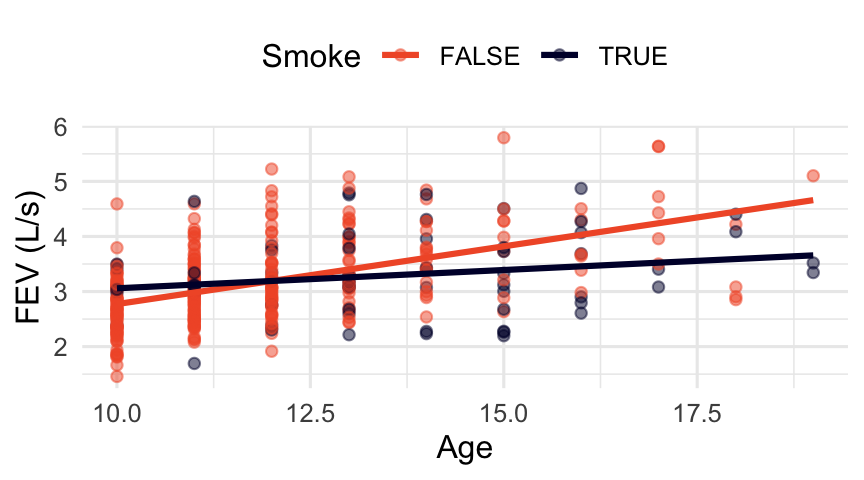

Day 12: Inference for linear combinations
We’re interested in modeling lung capacity (FEV) on age and smoking status for a sample of adolescents. As kids get older, FEV generally increases, but we also think FEV decreases for smokers. Since smokers are likely to be older, we need a model that accounts for both.
Theoretical mean model:
\[\mu\{FEV \mid Age, Smoke\} = \beta_0 + \beta_1\, Age + \beta_2\, Smoke + \beta_3\, Age \times Smoke\]
| term | estimate | std. error | t | p-value |
|---|---|---|---|---|
| Intercept | 0.675 | 0.251 | 2.68 | 0.008 |
| Age | 0.210 | 0.021 | 9.97 | <0.001 |
| SmokeTRUE | 1.720 | 0.563 | 3.05 | 0.002 |
| Age:SmokeTRUE | -0.143 | 0.042 | -3.40 | <0.001 |
Example: Models for each group
Nonsmokers (\(Smoke = 0\)): \(\mu\{FEV \mid Age\} =\)
\(\hat y=\)
Smokers (\(Smoke = 1\)): \(\mu\{FEV \mid Age\} =\)
\(\hat y=\)
Reading the table: what is significantly different than 0?
- The intercept for non-smokers is ___________
- The intercept offset for smokers is ___________
- The slope for non-smokers is ___________
- The difference in slopes between smokers and non-smokers is __________
- The slope for smokers is ____________
The slope for smokers is \(\beta_1 + \beta_3\). The table gives us \(SE(\widehat\beta_1)\) and \(SE(\widehat\beta_3)\), but not the standard error of their sum.
Why can’t we just add \(SE(\widehat\beta_1) + SE(\widehat\beta_3)\)?
Why can’t we use the p-value for Age:SmokeTRUE to test whether the smoker slope is zero?
TipDefinition
A linear combination of coefficients has the form
\[\gamma = c_1 \beta_i + c_2 \beta_j\]
where \(c_1\) and \(c_2\) are constants
Estimate: \(\widehat\gamma =\) _________________
Standard error:
\[SE(\widehat\gamma) = \sqrt{c_1^2 \{SE(\widehat\beta_i)\}^2 + c_2^2 \{SE(\widehat\beta_j)\}^2 + 2 c_1 c_2 \, Cov(\widehat\beta_i, \widehat\beta_j)}\]
The extra term is there because \(\widehat\beta_i\) and \(\widehat\beta_j\) come from the same fitted model, so their estimation errors are not independent. \(Cov(\widehat\beta_i, \widehat\beta_j)\) measures how they move together.
The covariance matrix of the coefficients
vcov(fev_lm) |> round(4) (Intercept) Age SmokeTRUE Age:SmokeTRUE
(Intercept) 0.0632 -0.0052 -0.0632 0.0052
Age -0.0052 0.0004 0.0052 -0.0004
SmokeTRUE -0.0632 0.0052 0.3172 -0.0234
Age:SmokeTRUE 0.0052 -0.0004 -0.0234 0.0018The diagonal entries are the variances, \(V(\widehat \beta_j) = \{SE(\widehat\beta_j)\}^2\).
- Check: \(SE(\widehat\beta_1) =\) ________ , so \(\{SE(\widehat\beta_1)\}^2 =\) ________
The off-diagonal entries are the covariances, \(Cov(\widehat\beta_i, \widehat\beta_j)\). - The matrix is symmetric: \(Cov(\widehat\beta_i, \widehat\beta_j) = Cov(\widehat\beta_j, \widehat\beta_i)\).
Example 1: CI for the smoker slope
Target: \(\gamma = \beta_1 + \beta_3\). So \(c_1 =\)_____ and \(c_2=\)_________
Estimate:
Standard error: pull the pieces out of the covariance matrix.
| piece | value |
|---|---|
| \(\{SE(\widehat\beta_1)\}^2\) | |
| \(\{SE(\widehat\beta_3)\}^2\) | |
| \(Cov(\widehat\beta_1, \widehat\beta_3)\) |
90% CI: \(\widehat\gamma \pm t^*_{n-(p+1)} \cdot SE(\widehat\gamma)\), where \(n = 345\), \(p = 3\), so \(df = 341\) and \(t^* \approx 1.649\).
Interpretation:
NoteWhat if we ignored the covariance?
Using only \(\sqrt{\{SE(\widehat\beta_1)\}^2 + \{SE(\widehat\beta_3)\}^2}\) would give 0.047. The correct SE is 0.037. Here the covariance is negative, so ignoring it makes the interval too wide.
Testing a linear combination
Hypotheses: \(H_0: \gamma = \gamma_0\) vs. \(H_a: \gamma \ne, <, \text{or} > \gamma_0\)
Test statistic: \(t = \dfrac{\widehat\gamma - \gamma_0}{SE(\widehat\gamma)}\)
Reference distribution: \(t\) distribution with \(df = n - (p+1)\)
p-value: area in the tail(s) specified by \(H_a\)
Same four steps as a test for a single coefficient. Only the estimate and the SE change.
Example: Is the smoker slope different from zero? Using \(\widehat\gamma =\) 0.0664 and \(SE(\widehat\gamma) =\) 0.0366:
Your turn: smokers vs. nonsmokers at age 15
At age 15, how different is the mean FEV of smokers and nonsmokers?
0. Look back and the graph and identify what this question is asking about. What do you think you will find?
1. Write the theoretical mean function for each group evaluated at \(Age = 15\), and subtract (smoker \(-\) nonsmoker) to find \(\gamma\).
2. The difference is \(\gamma =\)___________________________, so \(c_2 =\) ______ \(\qquad c_3 =\) ______
3. Find \(\hat\gamma\)
3. Write out \(SE(\widehat\gamma)\) using the values from the covariance matrix.
4. Construct a 95% CI for \(\gamma\) (\(df = 341\), \(t^* \approx 1.967\)).
5. Test \(H_0: \gamma = 0\) vs. \(H_a: \gamma \ne 0\).
6. Interpret your results in context.
A shortcut: re-center the model
If we measure age as “years since age 15”, the coefficient on Smoke is the smoker-minus-nonsmoker difference at age 15, and the standard table gives us its SE directly:
fev <- mutate(fev, Age15 = Age - 15)
lm(FEV ~ Age15 * Smoke, data = fev) |> tidy()# A tibble: 4 × 5
term estimate std.error statistic p.value
<chr> <dbl> <dbl> <dbl> <dbl>
1 (Intercept) 3.82 0.0780 49.0 2.33e-156
2 Age15 0.210 0.0210 9.97 1.01e- 20
3 SmokeTRUE -0.430 0.125 -3.44 6.57e- 4
4 Age15:SmokeTRUE -0.143 0.0422 -3.40 7.63e- 4Compare the SmokeTRUE row to the output from the previous section.
Summary
| To do inference for… | Use | |
|---|---|---|
| a single coefficient \(\beta_j\) | \(t\)-test / CI from the coefficient table | |
| a linear combination \(c_1\beta_i + c_2\beta_j\) | \(t\)-test / CI with \(SE = \sqrt{c_1^2 \{SE(\widehat\beta_i)\}^2 + c_2^2 \{SE(\widehat\beta_j)\}^2 + 2 c_1 c_2 \, Cov(\widehat\beta_i, \widehat\beta_j)}\) | |
| several coefficients at once (\(\beta_2 = \beta_3 = 0\)) | extra sums of squares \(F\)-test |
- Never add standard errors. Use the covariance matrix.
- The reference distribution is always \(t_{n-(p+1)}\) for a single linear combination.
- A linear combination is one number, so we use a \(t\) procedure. When \(d > 1\) coefficients are tested at the same time, that’s an \(F\)-test.